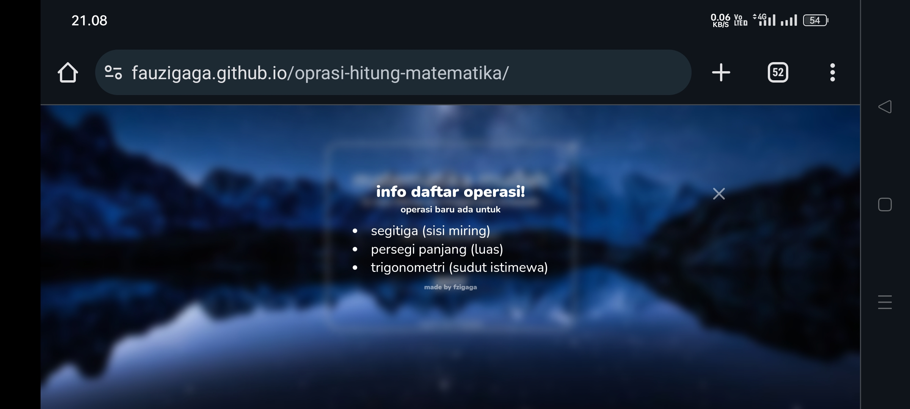
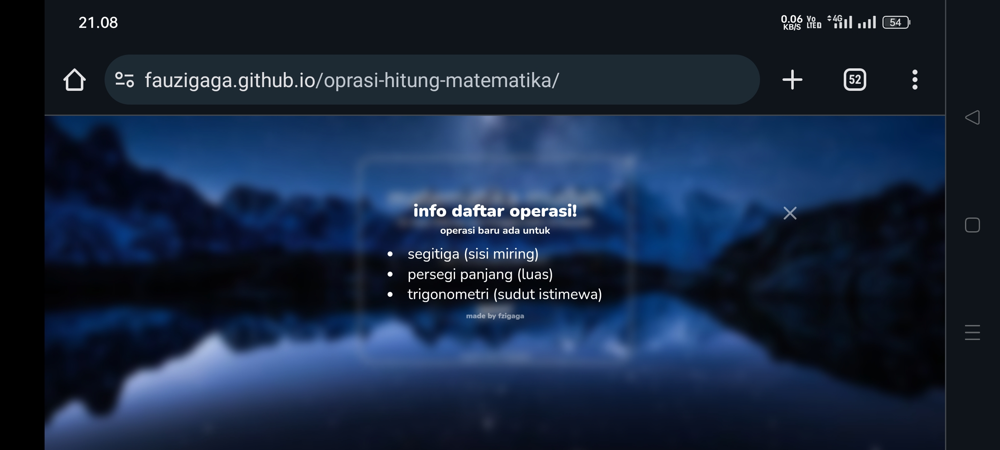

WELCOME!
website ini saya buat untuk latihan
website ini saya buat untuk latihan
nama:fauzi gaga ardilla
status: pelajar
tinggi: 175cm
bb: 55kg
school: SMAN2 Purworejo
hobi: Bermain game, olahraga,ngoding, dll
Ini adalah beberapa proyek kecil yang saya hasilkan melalui pembelajaran otodidak. Meskipun mungkin berskala kecil, setiap proyek ini merupakan bukti dedikasi saya dalam mengeksplorasi dan mengasah keterampilan secara mandiri. Saya senang berbagi proyek-proyek ini sebagai langkah awal dalam perjalanan pembelajaran saya.

website kedai makanan
 

operasi hitung matematika